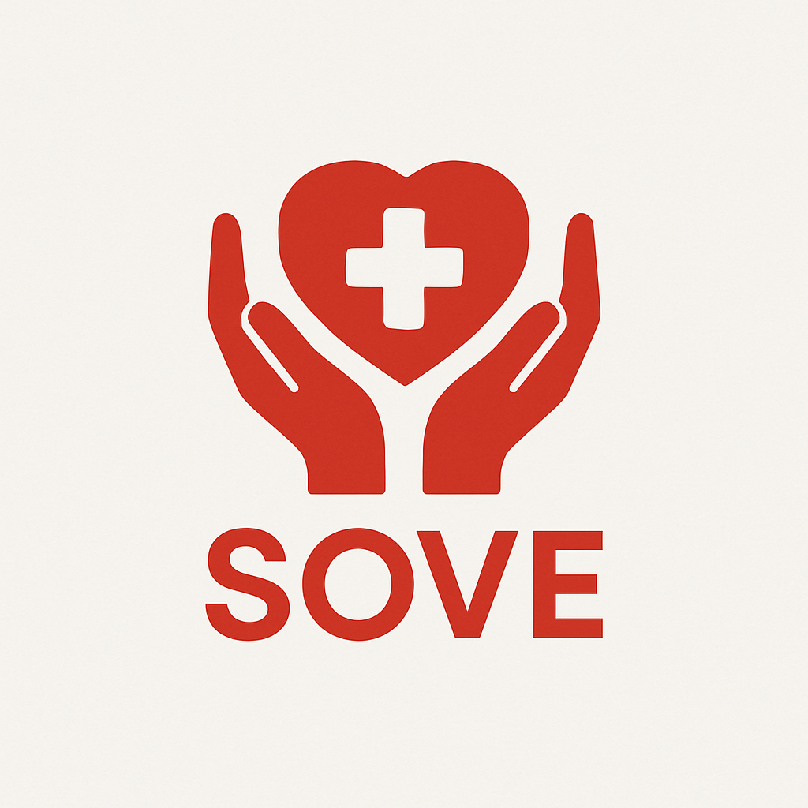

Desastres Naturales en México
- Sismos
- Huracanes
- Inundaciones
- Incendios
Datos 2023
- 393 eventos
- $88,910 millones en pérdidas
- 0.3% del PIB nacional
Falta de un sistema formal
- Duplicidad de esfuerzos
- Mala distribución de recursos
- Desinformación
- Riesgo a voluntarios

Coordinación actual
- Redes sociales
- Mensajería instantánea

Consecuencias
- Asignación ineficiente
- Retrasos en la ayuda
- Zonas críticas sin atención

Probabilidad de supervivencia
- 90% – primeras 24 h
- 50% – después de 48 h
- 20% – después de 72 h
¡Cada minuto cuenta!

Alineación a marcos
- ICS (Incident Command System)
- FEMA (Lineamientos de respuesta)
- Base para SOVE
¿Qué plantean ICS/FEMA?
- Roles y cadenas de mando claras
- Trazabilidad y registro
- Comunicación en tiempo real
- Interoperabilidad y seguridad
Digitalización y mapeo
- OCHA: coordinación humanitaria
- Ushahidi/Sahana: mapas colaborativos
- Mejoran la respuesta con datos
Brecha de contexto
- Plataformas globales ≠ realidad mexicana
- Voluntarios espontáneos y usabilidad
- Protocolos y datos locales
Opción A: Informal
- + Pros: sin inversión, inmediato
- − Contras: duplicidad, desinformación
- Asignación ineficiente, retrasos, riesgos
Opción B: Adaptar plataformas
- + Pros: probadas, base tecnológica
- − Contras: costo de adaptación
- No alineadas a protocolos nacionales
- Usabilidad limitada p/voluntarios locales

Desarrollar SOVE
- Plataforma nacional adaptada al contexto mexicano
- Gestión integral de voluntariado en emergencias
- Basada en estándares ICS y FEMA
- Escalable y sostenible

Propuesta de SOVE
- Plataforma web y móvil
- Registro de voluntarios (datos, habilidades, ubicación)
- Asignación automática de tareas

Valor Agregado
- Adaptación local a necesidades mexicanas
- Diseño accesible y amigable para voluntarios espontáneos
- Reportes transparentes → confianza ciudadana

Inversión inicial (única)
- Desarrollo + servidores + capacitación
- ≤ $80,000 MXN

Operación anual
- Servidores en la nube → $50,000 MXN
- Mantenimiento y soporte → $40,000 MXN
- Mejoras y actualizaciones → $20,000 MXN
Total anual: $110,000 MXN
Clientes principales
- Gobiernos (Protección Civil)
- ONGs (Cruz Roja, brigadas)
- Universidades y empresas con RSE